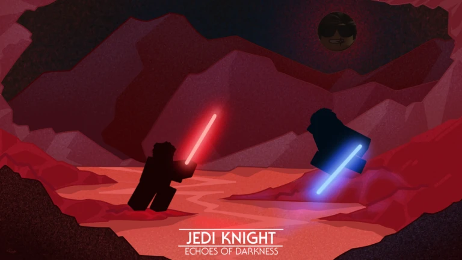
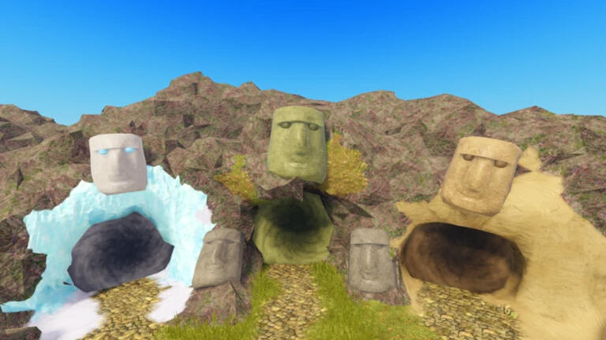
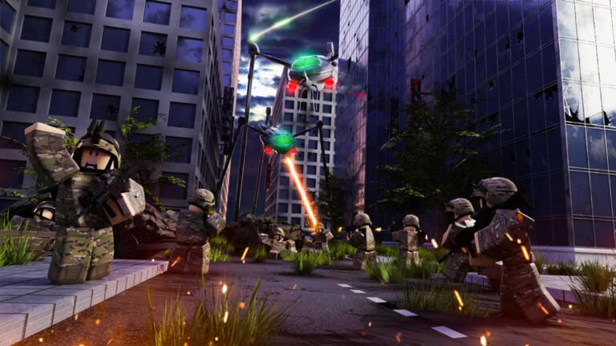
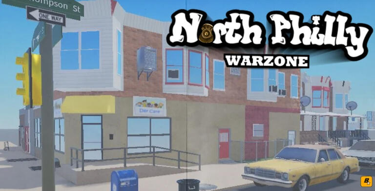
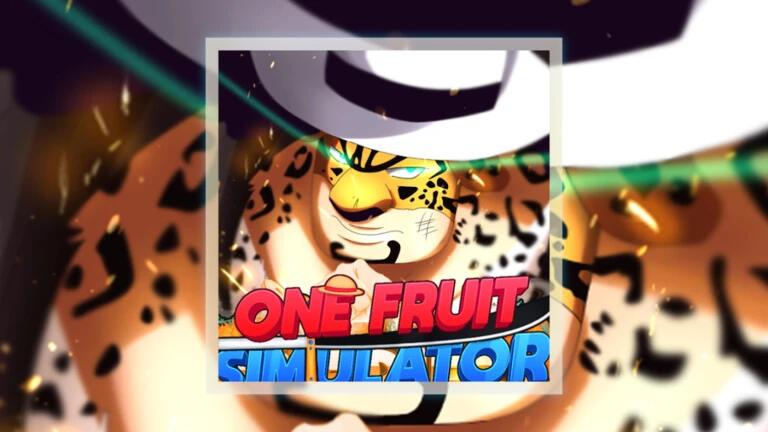

Eight Years of Full-Stack Roblox Development. Combat Systems, UI/UX, Server Architecture, and experience in numerous other areas of Roblox Studio.
I'm Schizophy — a full-stack Roblox developer with over eight years of experience across multiple areas of Studio. My focus areas are Front-End systems, though I have lots of experience in back-end work, UI/UX engineering, and Anti-Cheat systems.
Combat is where most of my experience lies, and is my main passion.
On the UI side, I have experience in design and implementation of UI systems — from HUD elements to complex menu suites.
Beyond scripting, I'm fluent across animation, rigging, and the broader Studio pipeline — which means I can work end-to-end without handoff gaps or communication overhead.

For a short while from the end of 2025 to early 2026, I took on a position in 》The New Jedi Order《 while searching for a Star Wars project in need of help. I was the lead scripter, with a main focus on fixing broken systems previously implemented by other developers, and building out the combat system for the game. My beginning work started with the implementation of a new planet, and the Sith Order for the game. Work on combat outside of the bug fixes I implemented was to come after the new Order was implemented, but the game changed ownership and my original deal was not to be upheld, as new Project Leads desired to run the game with a stricter outlook influenced by nostalgia.

For a couple years alongside 2 other main developers I worked for Soybeen in implementing new content for Booga Booga, directly after it's steady decline began after his short break. My work on the game included a complete rewrite of the combat system, and the implementation of a new UI suite for the game, alongside various content updates. The project was ultimately, with little warning, cancelled and made open source by Soybeen due to a desire to leave the platform. While the end was bitter, the time I spent in Booga Booga was amazing and I learned a lot about various systems working on the project.

Lead Scripter on a smaller, yet well made simulator game based on the War of the Worlds movies. The project was shut down after hype surrounding the movie died down, but this project was more of a passion project for me as a fan of the movies regardless. Old versions of the game are still up to be played, however not as pristine as we who once worked on the project would like.

DataStores, Most of the gun system, cars, and all of the main UI work. Rbxreece sold ownership to the game to a long time community member circa late 2024, and my contact with Reece ceased around the end of the project as he stepped away from Roblox development. Though many of my contributions have been replaced in the game, there are still hints of where I worked in the past, and during it's time the community surrounding these games was very enjoyable.

Regretably not much credit for this game can be claimed as my own, as it is one of the most popular projects I have worked on however, my contributions were noticeable in the game's early life. I did mostly contract work in early 2022 and have since moved far away from the project but I look fondly upon the enviornment that surrounded the game in it's early life. One of the most enjoyable teams I've ever worked with and a project I really had a passion for in the beginning.
Whether you need a single system scripted, a full game built from the ground up, or a reliable developer to embed in your team — I'm open to commissions, freelance contracts, and long-term collaborations.
If you take an interest in having me on your team, reach out for a more in-depth account of past works, addiontal references and projects, or discussion of rates and availability. I'm happy to talk through any potential work, and can be reached most reliably through Discord.